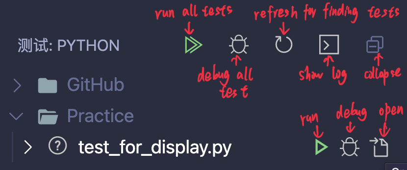
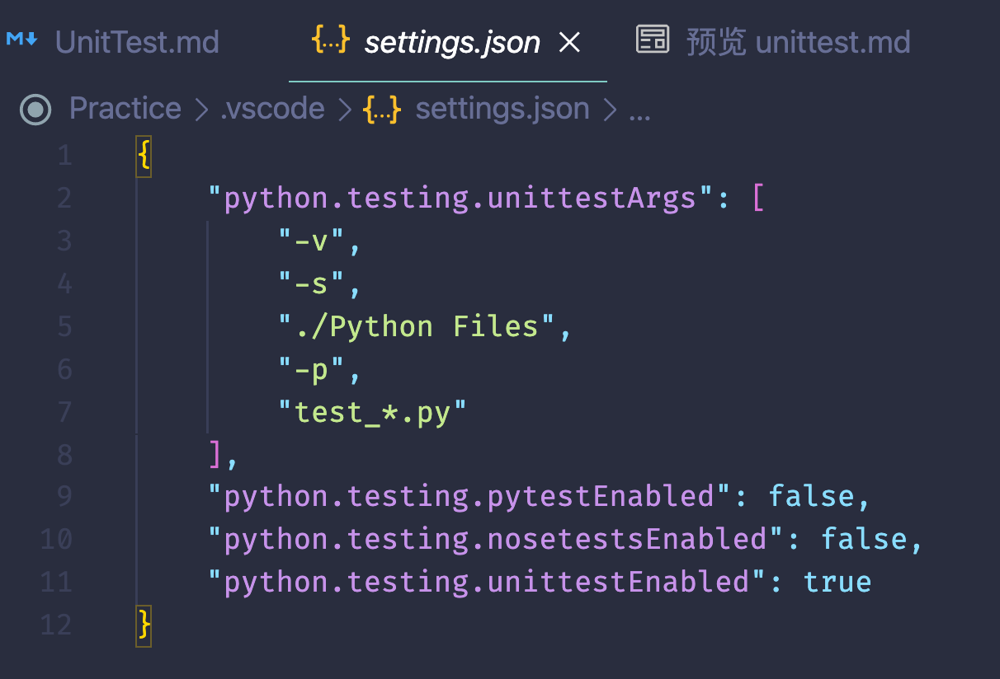

UnitTest
Pythonを利用してUnitTestを実行するフレームワークの中に大人気があるのは三つ：
UnitTest, Pytest, RobotFramework
UnitTestはStandard Libraryにあるものの、インストールする必要はない
PytestとRobotFrameworkは3rd Party Libraryのゆえ、インストールする必要がある
unittestで使うテストは依存(fixtures)を管理するコードとテスト自身のコードで構成させる。
単独なテストはそれぞれTestCaseを継承してメソッドを追加もしくはオーバーライトする。
例：
import unittest
class SimplisticTest(unittest.TestCase):
def test(self):
a = 'a'
b = 'a'
self.assertEqual(a, b)
if __name__ == '__main__':
unittest.main()
結果は以下となる
>>> python3 -m unittest test.py
.
----------------------------------------------------------------------
Ran 1 test in 0.000s
OK
一行目の.はテスト成功を意味する
-v(verbose)を追加したらより詳しい出力結果が出て来る
>>>python3 -m unittest **-v** test.py
test (test.SimplisticTest) ... ok
----------------------------------------------------------------------
Ran 1 test in 0.000s
OK
テストの結果
| 結果 | 詳細 |
|---|---|
| OK | 成功 |
| FAIL | テスト失敗、そしてAssertionErrorのExceptionを起こした |
| ERROR | AssertionError以外のExceptionを起こした |
import unittest
class OutcomesTest(unittest.TestCase):
def testPass(self):
return
def testFail(self):
self.assertFalse(True)
def testError(self):
raise RuntimeError('Test error!')
テスト失敗でしたら、Tracebackは出力に反映する
>>>python3 -m unittest test.py
EF.
======================================================================
ERROR: testError (test.OutcomesTest)
----------------------------------------------------------------------
Traceback (most recent call last):
File "/Users/maozhongfu/Practice/test.py", line 13, in testError
raise RuntimeError('Test error!')
RuntimeError: Test error!
======================================================================
FAIL: testFail (test.OutcomesTest)
----------------------------------------------------------------------
Traceback (most recent call last):
File "/Users/maozhongfu/Practice/test.py", line 10, in testFail
self.assertFalse(True)
AssertionError: True is not false
----------------------------------------------------------------------
Ran 3 tests in 0.001s
FAILED (failures=1, errors=1)
失敗の原因を分かりやすくために、fail*とassert*はmsgのパラメータを持っていて、詳しいエラーメッセージを報告する
import unittest
class FailureMessageTest(unittest.TestCase):
def testFail(self):
self.assertFalse(True, 'failure message goes here')
>>>python3 -m unittest -v test.py
testFail (test.FailureMessageTest) ... FAIL
======================================================================
FAIL: testFail (test.FailureMessageTest)
----------------------------------------------------------------------
Traceback (most recent call last):
File "/Users/maozhongfu/Practice/test.py", line 7, in testFail
self.assertFalse(True, 'failure message goes here')
AssertionError: True is not false : failure message goes here
----------------------------------------------------------------------
Ran 1 test in 0.001s
FAILED (failures=1)
boolean test
import unittest
class TruthTest(unittest.TestCase):
def testAssertTrue(self):
self.assertTrue(True)
def testAssertFalse(self):
self.assertFalse(False)
>>>python3 -m unittest -v test.py
testAssertFalse (test.TruthTest) ... ok
testAssertTrue (test.TruthTest) ... ok
----------------------------------------------------------------------
Ran 2 tests in 0.000s
OK
equal test
import unittest
class EqualityTest(unittest.TestCase):
def testExpectEqual(self):
self.assertEqual(1, 3 - 2)
def testExpectEqualFails(self):
self.assertEqual(2, 3 - 2)
def testExpectNotEqual(self):
self.assertNotEqual(2, 3 - 2)
def testExpectNotEqualFails(self):
self.assertNotEqual(1, 3 - 2)
>>>python3 -m unittest -v test.py
testExpectEqual (test.EqualityTest) ... ok
testExpectEqualFails (test.EqualityTest) ... FAIL
testExpectNotEqual (test.EqualityTest) ... ok
testExpectNotEqualFails (test.EqualityTest) ... FAIL
======================================================================
FAIL: testExpectEqualFails (test.EqualityTest)
----------------------------------------------------------------------
Traceback (most recent call last):
File "/Users/maozhongfu/Practice/test.py", line 10, in testExpectEqualFails
self.assertEqual(2, 3 - 2)
AssertionError: 2 != 1
======================================================================
FAIL: testExpectNotEqualFails (test.EqualityTest)
----------------------------------------------------------------------
Traceback (most recent call last):
File "/Users/maozhongfu/Practice/test.py", line 16, in testExpectNotEqualFails
self.assertNotEqual(1, 3 - 2)
AssertionError: 1 == 1
----------------------------------------------------------------------
Ran 4 tests in 0.001s
FAILED (failures=2)
almost equal test
import unittest
class AlmostEqualTest(unittest.TestCase):
def testEqual(self):
self.assertEqual(1.1, 3.3 - 2.2)
def testAlmostEqual(self):
self.assertAlmostEqual(1.1, 3.3 - 2.2, places=1)
def testNotAlmostEqual(self):
self.assertNotAlmostEqual(1.1, 3.3 - 2.0, places=1)
placesは小数点の後、何桁まで
>>>python3 -m unittest test.py
.F.
======================================================================
FAIL: testEqual (test.AlmostEqualTest)
----------------------------------------------------------------------
Traceback (most recent call last):
File "/Users/maozhongfu/Practice/test.py", line 7, in testEqual
self.assertEqual(1.1, 3.3 - 2.2)
AssertionError: 1.1 != 1.0999999999999996
----------------------------------------------------------------------
Ran 3 tests in 0.000s
FAILED (failures=1)
container test
list,set,dictなどのcontainerに対するテストもできる
import textwrap
import unittest
class ContainerEqualityTest(unittest.TestCase):
def testCount(self):
self.assertCountEqual(
[1, 2, 3, 2],
[1, 3, 2, 3],
)
def testDict(self):
self.assertDictEqual(
{'a': 1, 'b': 2},
{'a': 1, 'b': 3},
)
def testList(self):
self.assertListEqual(
[1, 2, 3],
[1, 3, 2],
)
def testMultiLineString(self):
self.assertMultiLineEqual(
textwrap.dedent("""
This string
has more than one
line.
"""),
textwrap.dedent("""
This string has
more than two
lines.
"""),
)
def testSequence(self):
self.assertSequenceEqual(
[1, 2, 3],
[1, 3, 2],
)
def testSet(self):
self.assertSetEqual(
set([1, 2, 3]),
set([1, 3, 2, 4]),
)
def testTuple(self):
self.assertTupleEqual(
(1, 'a'),
(1, 'b'),
)
>>>python3 -m unittest test.py
FFFFFFF
======================================================================
FAIL: testCount (test.ContainerEqualityTest)
----------------------------------------------------------------------
Traceback (most recent call last):
File "/Users/maozhongfu/Practice/test.py", line 8, in testCount
self.assertCountEqual(
AssertionError: Element counts were not equal:
First has 2, Second has 1: 2
First has 1, Second has 2: 3
======================================================================
FAIL: testDict (test.ContainerEqualityTest)
----------------------------------------------------------------------
Traceback (most recent call last):
File "/Users/maozhongfu/Practice/test.py", line 14, in testDict
self.assertDictEqual(
AssertionError: {'a': 1, 'b': 2} != {'a': 1, 'b': 3}
- {'a': 1, 'b': 2}
? ^
+ {'a': 1, 'b': 3}
? ^
======================================================================
FAIL: testList (test.ContainerEqualityTest)
----------------------------------------------------------------------
Traceback (most recent call last):
File "/Users/maozhongfu/Practice/test.py", line 20, in testList
self.assertListEqual(
AssertionError: Lists differ: [1, 2, 3] != [1, 3, 2]
First differing element 1:
2
3
- [1, 2, 3]
+ [1, 3, 2]
======================================================================
FAIL: testMultiLineString (test.ContainerEqualityTest)
----------------------------------------------------------------------
Traceback (most recent call last):
File "/Users/maozhongfu/Practice/test.py", line 26, in testMultiLineString
self.assertMultiLineEqual(
AssertionError: '\nThis string\nhas more than one\nline.\n' != '\nThis string has\nmore than two\nlines.\n'
- This string
+ This string has
? ++++
- has more than one
? ---- --
+ more than two
? ++
- line.
+ lines.
? +
======================================================================
FAIL: testSequence (test.ContainerEqualityTest)
----------------------------------------------------------------------
Traceback (most recent call last):
File "/Users/maozhongfu/Practice/test.py", line 40, in testSequence
self.assertSequenceEqual(
AssertionError: Sequences differ: [1, 2, 3] != [1, 3, 2]
First differing element 1:
2
3
- [1, 2, 3]
+ [1, 3, 2]
======================================================================
FAIL: testSet (test.ContainerEqualityTest)
----------------------------------------------------------------------
Traceback (most recent call last):
File "/Users/maozhongfu/Practice/test.py", line 46, in testSet
self.assertSetEqual(
AssertionError: Items in the second set but not the first:
4
======================================================================
FAIL: testTuple (test.ContainerEqualityTest)
----------------------------------------------------------------------
Traceback (most recent call last):
File "/Users/maozhongfu/Practice/test.py", line 52, in testTuple
self.assertTupleEqual(
AssertionError: Tuples differ: (1, 'a') != (1, 'b')
First differing element 1:
'a'
'b'
- (1, 'a')
? ^
+ (1, 'b')
? ^
----------------------------------------------------------------------
Ran 7 tests in 0.003s
FAILED (failures=7)
assertInは中に存在するかどうかをテストする
import unittest
class ContainerMembershipTest(unittest.TestCase):
def testDict(self):
self.assertIn(4, {1: 'a', 2: 'b', 3: 'c'})
def testList(self):
self.assertIn(4, [1, 2, 3])
def testSet(self):
self.assertIn(4, set([1, 2, 3]))
>>>python3 -m unittest test.py
FFF
======================================================================
FAIL: testDict (test.ContainerMembershipTest)
----------------------------------------------------------------------
Traceback (most recent call last):
File "/Users/maozhongfu/Practice/test.py", line 6, in testDict
self.assertIn(4, {1: 'a', 2: 'b', 3: 'c'})
AssertionError: 4 not found in {1: 'a', 2: 'b', 3: 'c'}
======================================================================
FAIL: testList (test.ContainerMembershipTest)
----------------------------------------------------------------------
Traceback (most recent call last):
File "/Users/maozhongfu/Practice/test.py", line 9, in testList
self.assertIn(4, [1, 2, 3])
AssertionError: 4 not found in [1, 2, 3]
======================================================================
FAIL: testSet (test.ContainerMembershipTest)
----------------------------------------------------------------------
Traceback (most recent call last):
File "/Users/maozhongfu/Practice/test.py", line 12, in testSet
self.assertIn(4, set([1, 2, 3]))
AssertionError: 4 not found in {1, 2, 3}
----------------------------------------------------------------------
Ran 3 tests in 0.001s
FAILED (failures=3)
exception test
import unittest
def raises_error(*args, **kwds):
raise ValueError('Invalid value: ' + str(args) + str(kwds))
class ExceptionTest(unittest.TestCase):
def testTrapLocally(self):
try:
raises_error('a', b='c')
except ValueError:
pass
else:
self.fail('Did not see ValueError')
def testAssertRaises(self):
self.assertRaises(
ValueError,
raises_error,
'a',
b='c',
)
>>>python3 -m unittest -v test.py
testAssertRaises (test.ExceptionTest) ... ok
testTrapLocally (test.ExceptionTest) ... ok
----------------------------------------------------------------------
Ran 2 tests in 0.000s
OK
Test Fixtures
Fixturesはテストするための外部の資源を指す
全てのテストケースのFixturesを設定するなら、TestCaseのsetUp()をオーバーライトする
整理する場合は、tearDown()をオーバーライトする
テストクラスの全てのインスタンスを設定したいなら、setUpClass()とtearDownClass()をオーバーライトする
モジュールの全てのテストに設定を掛けしたいなら、setUpModule()とtearDownModule()をオーバーライトする
import random
import unittest
def setUpModule():
print('In setUpModule()')
def tearDownModule():
print('In tearDownModule()')
class FixturesTest(unittest.TestCase):
@classmethod
def setUpClass(cls):
print('In setUpClass()')
cls.good_range = range(1, 10)
@classmethod
def tearDownClass(cls):
print('In tearDownClass()')
del cls.good_range
def setUp(self):
super().setUp()
print('\nIn setUp()')
self.value = random.randint(
self.good_range.start,
self.good_range.stop - 1,
)
def tearDown(self):
print('In tearDown()')
del self.value
super().tearDown()
def test1(self):
print('In test1()')
self.assertIn(self.value, self.good_range)
def test2(self):
print('In test2()')
self.assertIn(self.value, self.good_range)
実行したら、序列は以下となる
>>>python3 -u -m unittest -v test.py
In setUpModule()
In setUpClass()
test1 (test.FixturesTest) ...
In setUp()
In test1()
In tearDown()
ok
test2 (test.FixturesTest) ...
In setUp()
In test2()
In tearDown()
ok
In tearDownClass()
In tearDownModule()
----------------------------------------------------------------------
Ran 2 tests in 0.000s
OK
subtest
テストケースの間に小さな違いがあるなら、例えばパラメータ、subTest()を利用したら一つのテストメソッドのなかに区別すること可能
import unittest
class SubTest(unittest.TestCase):
def test_combined(self):
self.assertRegex('abc', 'a')
self.assertRegex('abc', 'B')
# 下の二つはテストされない
self.assertRegex('abc', 'c')
self.assertRegex('abc', 'd')
def test_with_subtest(self):
for pat in ['a', 'B', 'c', 'd']:
with self.subTest(pattern=pat):
self.assertRegex('abc', pat)
>>>python3 -m unittest -v test.py
test_combined (test.SubTest) ... FAIL
test_with_subtest (test.SubTest) ...
======================================================================
FAIL: test_combined (test.SubTest)
----------------------------------------------------------------------
Traceback (most recent call last):
File "/Users/maozhongfu/Practice/test.py", line 8, in test_combined
self.assertRegex('abc', 'B')
AssertionError: Regex didn't match: 'B' not found in 'abc'
======================================================================
FAIL: test_with_subtest (test.SubTest) (pattern='B')
----------------------------------------------------------------------
Traceback (most recent call last):
File "/Users/maozhongfu/Practice/test.py", line 16, in test_with_subtest
self.assertRegex('abc', pat)
AssertionError: Regex didn't match: 'B' not found in 'abc'
======================================================================
FAIL: test_with_subtest (test.SubTest) (pattern='d')
----------------------------------------------------------------------
Traceback (most recent call last):
File "/Users/maozhongfu/Practice/test.py", line 16, in test_with_subtest
self.assertRegex('abc', pat)
AssertionError: Regex didn't match: 'd' not found in 'abc'
----------------------------------------------------------------------
Ran 2 tests in 0.001s
FAILED (failures=3)
test_combinedの中の'c','d'に対する断言は実行されていない
test_with_subtest()は全てのパターンを実行した
※失敗の報告は三つだけど、実際テストケースとして二つ
skip test
import sys
import unittest
class SkippingTest(unittest.TestCase):
@unittest.skip('always skipped')
def test(self):
self.assertTrue(False)
@unittest.skipIf(sys.version_info[0] > 2,
'only runs on python 2')
def test_python2_only(self):
self.assertTrue(False)
@unittest.skipUnless(sys.platform == 'darwin',
'only runs on macOS')
def test_macos_only(self):
self.assertTrue(True)
def test_raise_skiptest(self):
raise unittest.SkipTest('skipping via exception')
>>>python3 -m unittest -v test.py
test (test.SkippingTest) ... skipped 'always skipped'
test_macos_only (test.SkippingTest) ... ok
test_python2_only (test.SkippingTest) ... skipped 'only runs on python 2'
test_raise_skiptest (test.SkippingTest) ... skipped 'skipping via exception'
----------------------------------------------------------------------
Ran 4 tests in 0.000s
OK (skipped=3)
dismiss failure test
import unittest
class Test(unittest.TestCase):
@unittest.expectedFailure
def test_never_passes(self):
self.assertTrue(False)
@unittest.expectedFailure
def test_always_passes(self):
self.assertTrue(True)
>>>python3 -m unittest -v test.py
test_always_passes (test.Test) ... unexpected success
test_never_passes (test.Test) ... expected failure
----------------------------------------------------------------------
Ran 2 tests in 0.001s
FAILED (expected failures=1, unexpected successes=1)
VSCodeでUnitTestを実行
ステップ１：
Pythonファイルを作る。ファイルの中にtestがあるのを確保する。
※もっとも推薦されているはtest_*のような形。(分かりやすい)
 上の例の中から任意な物を選択して、コピーペーストする
上の例の中から任意な物を選択して、コピーペーストする
 ステップ２：
ステップ２：
Ctrl+Shift+Pでコマンドパネルを召喚、python:testを入力し、Discover Testsを選択する
 ワークスペースを選択する
ワークスペースを選択する
 ステップ３：
ステップ３：

Enable and configure a Test Frameworkを選択する
ステップ４：
フレームワーク、フォルダ、ファイルパターンを順次で選択する


以上のステップを実行したら、サイドバーにtestのアイコンが出て来る
クリックしたら、以下のパネルが出て来る

ステップ１で作ったファイルを開くと

クラスとメソッドの上にRun test|Debug testが表示される
そして、.vscodeのフォルダにsettings.jsonが自動的に作られる

中身は以下となる

{
"python.testing.unittestArgs": [
"-v", //--verbose, 詳しい出力
"-s", //--start-directory
"./Python Files", //サーチするフォルダ
"-p", //--pattern
"test_*.py" //ステップ４で選択したファイルパターン
],
"python.testing.pytestEnabled": false,
"python.testing.nosetestsEnabled": false,
"python.testing.unittestEnabled": true //ステップ４で選択したフレームワーク
}
テストを実行したら、以下のような結果になる